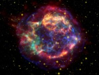

Welcome to Cryptic Cosmos! On this site, I'll be sharing information about space, astonomy, and other celestial events that are happening in our known universe. I will also be theorizing about different cosmic happenings.

Not only will I be talking about the factual elements of space, but I will also be touching on the fictional adaptiations inspired by space. For example; how accurate are those movies that depict relativity? Would time warping actually work? How likely is it that there is alien life beyond our solar system?These are just a few topics that will be discussed. I'll also delve into old and new findings about space.
Posting Schedule
Today is April 29, 2026